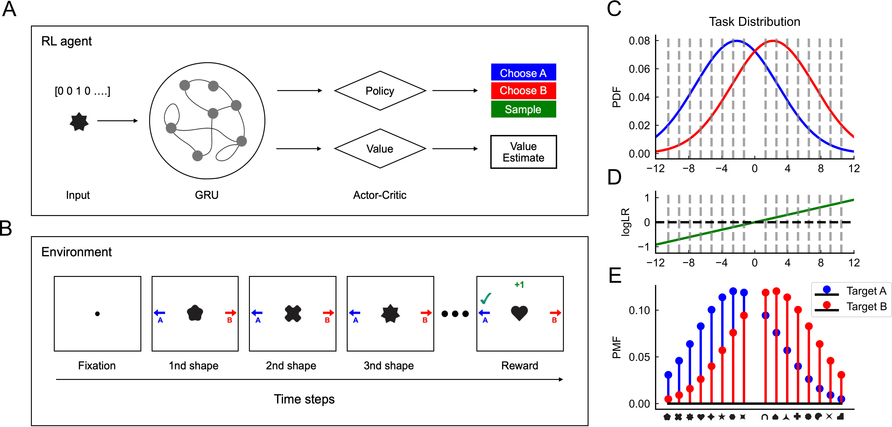

Jialin Li
Master's Student at NYU | Neuroscience & AI
I study the cognitive and neural mechanism that support human adaptive behavior and mental representation of the structure of the world. Currently, I work with Prof. Marcelo Mattar on Meta-RL agents. Previously, I completed my B.S. in Psychology at Peking University.
News
Nov 2025
Website updated with new design!
Seq 2025
My first paper is accepted by NeurIPS2025@CogInterp Workshop!
Seq 2024
I started my master's degree at NYU!
Jul 2024
I graduated from Peking University!
Selected Research

Meta-RL with Efficient Memory
Developing a reinforcement learning agent capable of flexible decision-making by efficiently sampling past experiences.
Distributional RL & Reference Points
Investigating the relationship between reference points and distributional reinforcement learning using neural data analysis.
Technical Skills
Python
Julia
MATLAB
R
PyTorch
LaTeX
Eye-tracking (EyeLink)
EEG Analysis